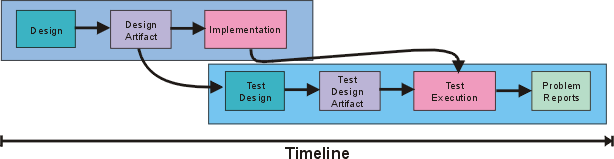
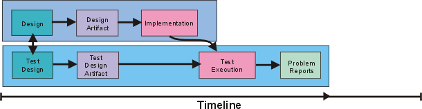

| Концепция: Разработка с приоритетом тестов |
 |
|
| Связанные элементы |
|---|
ВведениеПри разработке тестов используется информация из различных рабочих продуктов, включая реализации вариантов, модели проекта и интерфейсы классификаторов. Тесты выполняются после создания компонентов. Как правило, проекты тестов создаются непосредственно перед выполнением тестов и спустя значительное время с момента создания рабочих продуктов проекта программного обеспечения. Пример такого подхода показан на рис. 1. В данном случае разработка тестов начинается ближе к концу этапа реализации. В первую очередь при разработке используются результаты проектирования компонентов. Стрелка от реализации к выполнению тестов говорит о том, что выполнять тесты можно только после завершения реализации.  Рис. 1: Как правило, проектирование тестов смещено ближе к концу жизненного цикла Однако это не единственная возможная организация. Хотя выполнить тесты можно только после реализации компонентов, создать тесты можно и до этого. Например, тесты можно создать сразу же после создания рабочих продуктов проектирования. Более того, тесты можно создавать одновременно с проектированием компонентов, как показано на следующей диаграмме:  Рисунок 2: При разработке с приоритетом тестов проектирование программного обеспечения происходит одновременно с проектированием тестов Процесс разработки, в котором проектирование тестов подобным образом перенесено "вверх по течению", обычно называют разработкой "с приоритетом тестов". Каковы преимущества такой организации разработки?
ПримерыНиже приведены несколько примеров, иллюстрирующих идею проектирования с приоритетом тестов. Предположим, что вы создаете систему, заменяющую старый метод резервирования комнат для совещаний ("пойти к секретарю"). Один из методов класса MeetingDatabase называется getMeeting и снабжен следующей сигнатурой:
Получив в качестве аргументов имя сотрудника и время, метод getMeeting возвращает номер комнаты для совещаний, в которой сотрудник должен находиться в указанное время. Если на данное время сотрудник не должен присутствовать на совещании, метод возвращает особый объект Meeting unscheduled. Можно предусмотреть несколько прямолинейных тестов:
Эти тесты не очень впечатляющи, но их нужно выполнить. Кроме того, их можно создать прямо сейчас, написав код, который будет выполнен в будущем. Код теста на Java может выглядеть примерно так:
// if not in a meeting at given time,
// expect to be unscheduled.
public void testWhenAvailable()
{
Person fred = new Person("fred");
Time now = Time.now();
MeetingDatabase db = new MeetingDatabase();
expect(db.getMeeting(fred, now) == Meeting.unscheduled);
}
Но можно придумать и более интересные идеи. Например, данный метод ищет совпадения. Что бы ни искал метод, не помешает уточнить, что он должен возвращать, если будут найдены несколько совпадений. В данном случае вопрос будет звучать так: "Может ли сотрудник быть на двух совещаниях одновременно?" Это кажется невозможным, однако поговорив со секретарем, можно узнать нечто неожиданное. Оказывается, многим руководителям высшего звена назначают по несколько совещаний одновременно. Их роль заключается в том, чтобы показаться на совещании, принять в нем участие в течение короткого промежутка времени и пойти дальше. Если в системе не будут поддерживаться подобные сценарии, ее потенциал будет реализован не полностью. Это пример того, как разработка с приоритетом тестов позволяет обнаруживать ошибки анализа до начала реализации проекта. Следует помнить о нескольких обстоятельствах:
В качестве второго примера рассмотрим модель диаграммы состояний для системы кондиционирования.
Рисунок 3: диаграмма состояний системы отопления и кондиционирования Набор тестов должен охватить все дуги диаграммы состояний. Один из тестов может начинаться с холостого режима работы, генерировать событие "слишком высокая температура", затем генерировать сбой в режиме охлаждения, выполнять очистку сбоя, генерировать еще одно событие "слишком высокая температура" и возвращать систему в холостой режим. Поскольку этот сценарий не охватывает все дуги, нужны дополнительные тесты. Цель подобных тестов - поиск различных ошибок в реализации. Например, пройдя все дуги, можно убедиться в том, что в реализации не забыто ни одной дуги. Имитируя последовательности событий, в ходе которых возникают сбои и происходит возврат к нормальному состоянию, подобные тесты могут проверять правильность функций очистки после нештатных состояний. Дополнительные сведения о тестировании диаграмм состояний можно найти в разделе Рекомендации по рабочему продукту: идеи по тестированию диаграмм операций и состояний. В последнем примере используется часть модели проекта. Между кредиторами и счетами существует связь вида "один ко многим", т.е. у каждого кредитора может быть несколько неоплаченных счетов.
Рисунок 4: Связь между классами Creditor и Invoice Для тестирования этой модели нужно проверить поведение системы в ситуациях, когда у кредитора нет счетов, когда у него ровно один счет и когда у него большое количество счетов. Кроме того, испытатель должен решить для себя, возможны ли ситуации, когда счет связан сразу с несколькими кредиторами или не связан ни с одним кредитором. Например, пользователи бумажной системы, которую призвана заменить компьютеризованная система, пользуются счетами без кредиторов для учета дел, которые нужно выполнить. В таком случае это будет отдельная задача, которую нужно решать на этапе анализа. Кто ведет разработку с приоритетом тестов?Разработку с приоритетом тестов ведут разработчики проектов и другие пользователи. Довольно часто такую разработку ведут авторы программ. Достоинство этой системы заключается в том том, что она позволяет сократить объем информации, которой придется обмениваться участникам проекта. Разработчику рабочих продуктов и разработчику тестов не нужно объяснять друг другу одни и те же вещи. Более того, если разработкой тестов занимается отдельный человек, ему придется потратить время на тщательное изучение проекта, тогда как проект прекрасно известен первоначальному разработчику. Наконец, многие вопросы типа "Что случится, если произойдет сбой компрессора в состоянии X?" возникают как на этапе создания рабочих продуктов, так и во время разработки тестов, поэтому, быть может, будет эффективнее задать их один раз и записать ответы на бумагу в виде тестов. Однако есть и неудобства. Во-первых, создатель рабочего продукта в определенной степени склонен к тому, чтобы не видеть собственных ошибок. Создание тестов позволит заметить часть ошибок, однако, вероятно, другой сотрудник смог бы заметить больше ошибок. Серьезность и масштабы этого фактора очень индивидуальны и сильно зависят от того, насколько опытен разработчик. Еще один недостаток того, что продукт и тесты для него разрабатывает один и тот же человек, заключается в отсутствии параллелизма. Хотя распределение ролей между разными сотрудниками приводит к увеличению общего объема работы, в целом таким образом можно ускорить выполнение проекта. Если люди жаждут поскорее перейти от проектирования к реализации, откладывание этого момента до разработки тестов может отрицательно повлиять на мотивацию коллектива. Более того, в подобных ситуациях возникает тенденция к поверхностному выполнению работы с тем, чтобы поскорее перейти к следующему этапу. Можно ли создать все тесты на этапе проектирования компонента?Нет. Причина этого в том, что не все решения принимаются на этапе создания проекта. Решения, принятые во время реализации, нельзя достаточно хорошо протестировать с помощью тестов, созданных во время создания проекта. Классическим примером такой ситуации может служить процедура сортировки массивов. Существует множество алгоритмов сортировки с различными преимуществами и недостатками. Как правило, быстрая сортировка быстрее сортировки вставкой на больших массивах, но зачастую медленнее нее на малых массивах. Поэтому при реализации алгоритма сортировки может быть принято решение выполнять быструю сортировку для массивов, содержащих более 15 элементов, и сортировку вставкой для остальных массивов. Проектировщики рабочих продуктов могут ничего не знать об этом решении. Подобное решение можно отразить в рабочем продукте, однако проектировщик вполне может решить, что игра не стоит свеч. Поскольку размер массива не играет никакой роли для проекта, в тесте могут использоваться только малые массивы, и как следствие, код быстрой сортировки может вообще остаться без тестирования. Еще один пример показан на следующем компоненте циклограммы. В ней показан класс SecurityManager, вызывающий метод log() класса StableStore. В данном случае метод log() возвращает ошибку, и поэтому класс SecurityManager вызывает метод Connection.close().
Рис. 5. Пример циклограммы администратора защиты Это хорошая памятка тому, кто будет выполнять реализацию. Когда бы в методе log() ни возникла ошибка, соединение должно быть закрыто. Вопрос в данном случае заключается в том, действительно ли реализатор обеспечил закрытие соединения в таких случаях, и если да - во всех случаях, или только в некоторых. Для того чтобы ответить на этот вопрос, проектировщик тестов должен найти все вызовы StableStore.log() и убедиться в том, что в каждом из них корректно обрабатывается ситуация с ошибкой. Может показаться, что раз вы проверили все вызовы StableStore.log(), можно обойтись и без теста. Разве не достаточно убедиться в том, что ошибки обрабатываются правильно? Быть может, проверки кода будет достаточно. Однако статистически процедуры обработки ошибок очень часто содержат ошибки, поскольку их разработчики склонны неявно опираться на предположения, которые были нарушены в силу возникновения ошибки. Типичным примером такой ситуации может служить процедура обработки ошибок, связанных с недостатком памяти. Например:
Данный фрагмент кода пытается устранить нехватку памяти путем выполнения очистки (что приводит к освобождению памяти), а затем возобновляет обработку событий. Предположим, что это решение приемлемо. Пусть даже процедура emergencyRestart не содержит запросов на выделение памяти. Однако процедура emergencyRestart может вызывать вспомогательную процедуру, которая, в свою очередь, вызывает другую вспомогательную процедуру, которая, в свою очередь, вызывает третью вспомогательную процедуру, которая создает новый объект. Учитывая то, что памяти нет, такая ситуация приводит к аварийному завершению всей программы. Подобные ошибки тяжело найти путем анализа кода. Разработка с приоритетом тестов и этапы RUPВплоть до данного момента мы предполагали, что вы будете разрабатывать максимальное возможное количество тестов настолько рано, насколько это возможно. То есть, сначала создается максимальное количество тестов на основе рабочего продукта проекта, а затем добавляются только тесты, учитывающие особенности реализации. Такой подход может оказаться неэффективным на этапе уточнения, поскольку тестирование в таких объемах может противоречить целям итераций этого этапа. Предположим, что создается архитектурный прототип для демонстрации жизнеспособности продукта инвесторам. Этот прототип может быть основан на небольшом числе вариантов использования. Код необходимо протестировать в таком объеме, чтобы убедиться в поддержке этих вариантов использования. Будет ли какой-нибудь вред в том, чтобы создать дополнительные тесты? Например, может быть очевидным тот факт, что прототип не рассчитан на определенные виды ошибок. Почему бы не задокументировать это обстоятельство путем создания тестов для этих ошибок? Но что если прототип будет работать правильно и выявит неприемлемость подхода, выбранного при создании архитектуры? В этом случае архитектура будет забракована вместе с дополнительными тестами на обработку ошибок. В подобной ситуации усилия, потраченные на разработку дополнительных тестов, окажутся потраченными впустую. Вероятно, правильнее было бы дождаться проверки жизнеспособности архитектуры и только после этого создавать дополнительные тесты. Этот фактор может показаться незначительным, но при реализации проектов очень важную роль играет психологический фактор. Задача этапа уточнения - устранение серьезных рисков. Все члены проектной группы должны быть сконцентрированы на этих рисках. Трата времени на второстепенные задачи может привести к потере концентрации и энергии в масштабах всего коллектива. Целесообразна ли разработка с приоритетом тестов на каких-либо стадиях этапа уточнения? Она может сыграть важную роль при исследовании рисков для архитектуры. Знание того, как риск может материализоваться и как можно нейтрализовать его, может повысить качество первого эскиза архитектуры. На этапе построения рабочие продукты проекта принимают свою окончательную форму. Реализуются все необходимые варианты использования и интерфейсы для всех классов. Поскольку цель данного этапа - полнота, на всем протяжении этого этапа рекомендуется вести разработку с приоритетом тестов. В дальнейшем ненужными могут стать (если вообще могут) очень немногие тесты. На начальном этапе и этапе поставки, как правило, уделяется незначительное внимание аспектам, подлежащим тестированию. Если же эти аспектам уделяется большое внимание, имеет смысл вести разработку с приоритетом тестов. Например, такой подход может быть целесообразным для предварительных вариантов доказательства концепции на начальном этапе. На этапах уточнения и построения продукта выбор варианта разработки должен быть обусловлен целями итерации. |


© Copyright IBM Corp. 1987, 2006. Все права защищены.. |